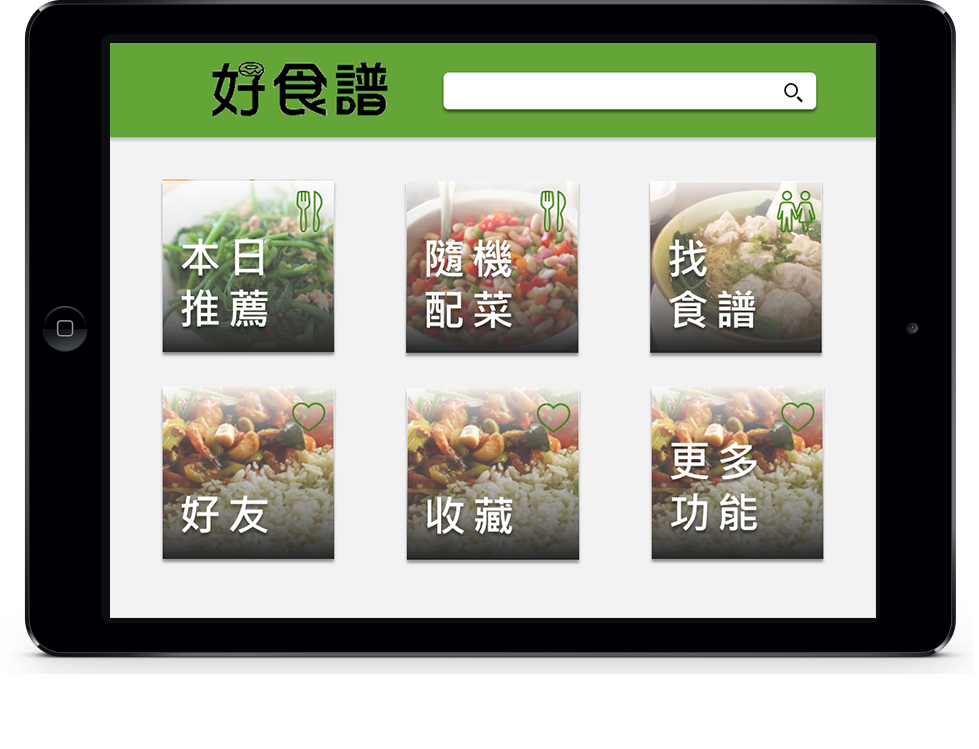
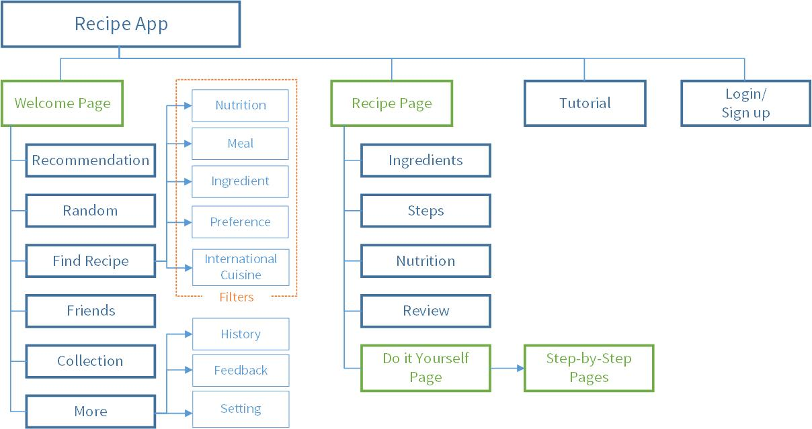

Recipe App for the Elderly
Team Project - Prototype
Human Computer Interaction course (Fall 2014) at National Taiwan University
Role
- Literature review
- Prototyping in powerpoint
- Moderate usability testing
Goal
With the population aging in Taiwan, we hoped to create a recipe app for the elderly to help them eat more healthier.
Process
- We created 2 personas after conducting literature review on user needs & behavior of the elderly, which includes:
- High needs in health concern and social interaction
- Preferred an interface with rich instructions
- Preferred tablets to traditional pc
- To rapidly generate and put together everyone's idea, we had design sessions to create sketches
- We created the prototype in powerpoint for the usability testing
App Information Architecture

Usability Testing
- We had a 65-year-old user to test the prototype on an iPad2 with 6 tasks, including different scenario such as asking him to find a recipe suited for people with hypertension
- We recorded the process and how long it took for him to complete the tasks, and had a questionnaire after the testing
- The feeback we got was really valuable for the app development, including to simplifly the navigation experience and to add the recommendation feature